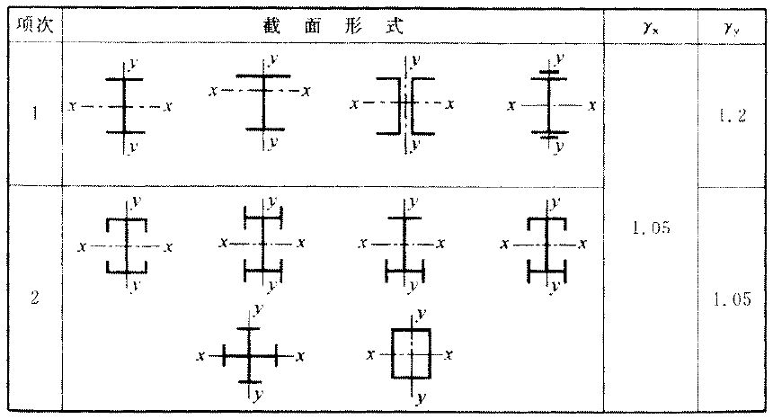
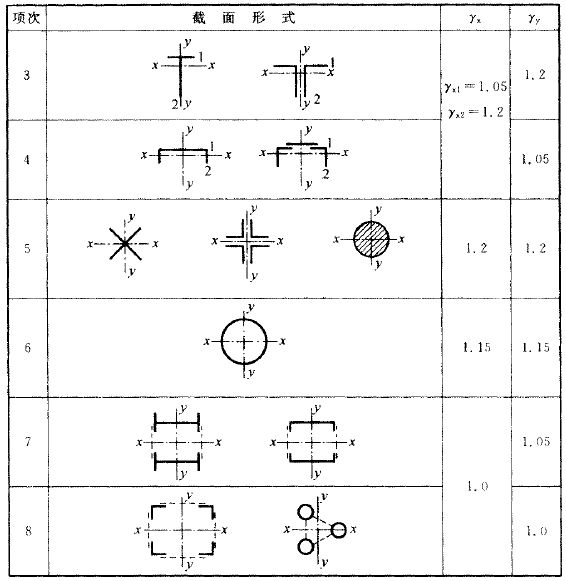

8 拉弯、压弯构件#
8.1 截面强度计算#
1. 弯矩作用在两个主平面内的拉弯构件和压弯构件（圆管截面除外）#
其截面强度应按下列规定计算：
2. 弯矩作用在两个主平面内的圆形截面拉弯构件和压弯构件#
其截面强度应按下列规定计算：
式中：
\(A_{\rm{n}}\) —— 圆管净截面面积；
\(W_{\rm{n}}\) —— 圆管净截面模量；
\(\gamma_{\rm{m}}\) —— 对于实腹圆形截面取1.2，圆管截面取1.15；
\(\gamma_{\rm{x}}\), \(\gamma_{\rm{y}}\) —— 与截面模量相应的截面塑性发展系数，应按表8.1.1采用。
当压弯构件受压翼缘的自由外伸宽度与其厚度之比大于 \(13\varepsilon_{\rm{k}}\) 而不超过 \(15\varepsilon_{\rm{k}}\) 时，应取 \(\gamma_{\rm{x}} = 1.0\)。
需要验算疲劳强度的拉弯、压弯构件，宜取 \(\gamma_{\rm{x}} = \gamma_{\rm{y}} = \gamma_{\rm{m}} = 1.0\)。
表8.1.1 截面塑性发展系数




8.2 构件的稳定性计算#
8.2.1 弯矩作用在对称轴平面内（绕\(x\)轴）的实腹式压弯构件（圆管截面除外）#
1. 弯矩作用平面内稳定性#
式中：
\(N\) —— 所计算构件范围内轴心压力设计值；
\(N_{\rm{Ex}}'\) —— 参数，按式（8.2.1-2）计算；
\(\phi_{\rm{x}}\) —— 弯矩作用平面内轴心受压构件稳定系数；
\(M_{\rm{x}}\) —— 所计算构件段范围内的最大弯矩设计值；
\(W_{\rm{1x}}\) —— 在弯矩作用平面内对受压最大纤维的毛截面模量；
\(\beta_{\rm{mx}}\) —— 等效弯矩系数，应按下列规定采用：
1. 无侧移框架柱和两端支承的构件：#
无横向荷载作用时，取 \(\beta_{\rm{mx}} = 0.6 + 0.4 \frac{M_2}{M_1}\)，\(M_1\) 和 \(M_2\) 为端弯矩，使构件产生同向曲率（无反弯点）时取同号；使构件产生反向曲率（有反弯点）时取异号，\(\left| M_1 \right| \geq \left| M_2 \right|\)；
无端弯矩但有横向荷载作用时：
跨中单个集中荷载：
\[ \beta_{\rm{mqx}} = 1 - 0.36 N / N_{\rm{cr}} \tag{8.2.1-2a} \]全跨均布荷载：
\[ \beta_{\rm{mqx}} = 1 - 0.18 N / N_{\rm{cr}} \tag{8.2.1-2b} \]\[ N_{\rm{cr}} = \frac{\pi^2 E I}{(\mu l)^2} \tag{8.2.1-3} \]
式中：
\(N_{\rm{cr}}\) —— 弹性临界力；
\(\mu\) —— 构件的计算长度系数。
有端弯矩和横向荷载同时作用时，将式（8.2.1-1）的 \(\beta_{\rm{mx}} M_{\rm{x}}\) 取为 \(\beta_{\rm{mqx}} M_{\rm{qx}} + \beta_{\rm{m1x}} M_1\)，即工况①和工况②等效弯矩的代数和。\(M_{\rm{qx}}\) 为横向荷载产生的弯矩最大值。
2. 有侧移框架柱和悬臂构件：#
除本款②项规定之外的框架柱，\(\beta_{\rm{m}} = 1 - 0.36 N / N_{\rm{cr}}\)；
有横向荷载的柱脚铰接的单层框架柱和多层框架的底层柱，\(\beta_{\rm{m}} = 1.0\)；
自由端作用有弯矩的悬臂柱，\(\beta_{\rm{m}} = 1 - 0.36 (1 - m) N / N_{\rm{cr}}\)，式中 \(m\) 为自由端弯矩与固定端弯矩之比，当弯矩图无反弯点时取正号，有反弯点时取负号。
当框架内力采用二阶分析时，柱弯矩由无侧移弯矩和放大的侧移弯矩组成，此时可对两部分弯矩分别乘以无侧移柱和有侧移柱的等效弯矩系数。
对于表8.1.1的3.4项中的单轴对称压弯构件，当弯矩作用在对称平面内且使翼缘受压时，除应按公式（8.2.1-1）计算外，尚应按下式计算：
式中：
\(W_{\rm{2x}}\) —— 对无翼缘端的毛截面模量。
2. 弯矩作用平面外稳定性#
式中：
\(\varphi_y\) —— 弯矩作用平面外的轴压构件稳定系数，按7.2.1条确定；
\(\varphi_{\rm{b}}\) —— 考虑弯矩变化和荷载位置影响的受弯构件整体稳定系数，按本规范第6.2节规定取值，对闭口截面 \(\varphi_{\rm{b}} = 1.0\)；
\(M_{\rm{x}}\) —— 所计算构件段范围内的最大弯矩设计值；
\(\eta\) —— 截面影响系数，闭口截面 \(\eta = 0.7\)，其它截面 \(\eta = 1.0\)。
3. 弯矩绕虚轴（\(x\)轴）作用的格构式压弯构件#
其弯矩作用平面内的整体稳定性应按下式计算：
式中：
\(I_{\rm{x}}\) —— 对\(x\)轴的毛截面的惯性矩；
\(y_0\) —— 由\(x\)轴到压力较大分肢的轴线距离或者到压力较大分肢腹板外边缘的距离，二者取较大者；
\(\varphi_{\rm{x}}\)、\(N_{\rm{Ex}}'\) —— 分别为弯矩作用平面内轴心受压构件稳定系数和参数，由换算长细比确定。
弯矩作用平面外的整体稳定性可不计算，但应计算分肢的稳定性，分肢的轴心力应按桁架的弦杆计算。对缀板柱的分肢尚应考虑由剪力引起的局部弯矩。
4. 弯矩绕实轴作用的格构式压弯构件#
其弯矩作用平面内和平面外的稳定性计算均与实腹式构件相同。但在计算弯矩作用平面外的整体稳定性时，长细比应取换算长细比，\(\phi_{\rm{b}}\) 应取1.0。
5. 双向压弯圆管的整体稳定#
当柱段中没有很大横向力或集中弯矩时，按下式计算：
式中：
\(\varphi\) —— 轴心受压稳定系数，按构件最大长细比取值；
\(M\) —— 计算双向压弯整体稳定时采用的弯矩值，按式（8.2.4-2）计算；
\(M_{\rm{xA}}\), \(M_{\rm{yA}}\), \(M_{\rm{xB}}\), \(M_{\rm{yB}}\) —— 分别为构件A端和B端关于\(x\)、\(y\)轴的弯矩；
\(\beta\) —— 计算双向压弯整体稳定时采用的等效弯矩系数；
\(M_{\rm{1x}}\), \(M_{\rm{2x}}\), \(M_{\rm{1y}}\), \(M_{\rm{2y}}\) —— 分别为构件两端关于\(x\)轴和\(y\)轴的最大、最小弯矩；
\(N_{\rm{E}}\) —— 根据构件最大长细比计算的欧拉力，按式（8.2.4-5）计算。
6. 双轴对称实腹式工字形（含H形）和箱形（闭口）截面的压弯构件#
其稳定性应按下列公式计算：
式中：
\(\varphi_{\rm{x}}\), \(\varphi_{\rm{y}}\) —— 对强轴\(x\)-\(x\)和弱轴\(y\)-\(y\)的轴心受压构件稳定系数；
\(\varphi_{\rm{bx}}\), \(\varphi_{\rm{by}}\) —— 考虑弯矩变化和荷载位置影响的受弯构件整体稳定系数，按本规范第6.2节规定取值（\(M_{\rm{cr}}\) 按简支梁计算）；
\(M_{\rm{x}}\), \(M_{\rm{y}}\) —— 所计算构件段范围内对强轴和弱轴的最大弯矩设计值；
\(W_{\rm{x}}\), \(W_{\rm{y}}\) —— 对强轴和弱轴的毛截面模量；
\(\beta_{\rm{mx}}\), \(\beta_{\rm{my}}\) —— 等效弯矩系数，应按本规范第8.2.1条弯矩作用平面内稳定计算的有关规定采用。
7. 双肢格构式压弯构件#
1. 按整体计算#
式中：
\(W_{\rm{1y}}\) —— 在 \(M_{\rm{y}}\) 作用下，对较大受压纤维的毛截面模量。
2. 按分肢计算#
在 \(N\) 和 \(M_{\rm{x}}\) 作用下，将分肢作为桁架弦杆计算其轴心力，\(M_{\rm{y}}\) 按下列公式分配给两分肢（图8.2.6），然后按本规范第8.2.1条的规定计算分肢稳定性。
分肢1：
分肢2：
式中：
\(I_1\), \(I_2\) —— 分肢1、分肢2对\(y\)轴的惯性矩；
\(y_1\), \(y_2\) —— \(M_{\rm{y}}\) 作用的主轴平面至分肢1、分肢2轴线的距离。

图8.2.6 格构式构件截面
1—分肢1； 2—分肢2
8. 格构式缀件的计算#
计算格构式缀件时，应取构件的实际剪力和按本规范公式（7.2.6）计算的剪力两者中的较大值进行计算。
9. 支撑的计算#
用作减小压弯构件弯矩作用平面外计算长度的支撑，应将压弯构件的受压翼缘（对实腹式构件）或受压分肢（对格构式构件）视为轴压构件按本规范7.5节的规定计算各自的支撑力。
8.3 框架柱的计算长度#
8.3.1 等截面柱#
在框架平面内的计算长度应等于该层柱的高度乘以计算长度系数\(\mu\)。框架分为纯框架和有支撑框架。
当采用二阶弹性分析方法计算内力且在每层柱顶附加考虑假想水平力\(H_{\rm{ni}}\)时，框架柱的计算长度系数\(\mu = 1.0\)。
当采用一阶弹性分析方法计算内力时，框架柱的计算长度系数\(\mu\)应按照下列规定确定：
1. 纯框架#
框架柱的计算长度系数\(\mu\)按本规范附录E表E-2有侧移框架柱的计算长度系数确定，也可按下列简化公式计算：
式中：
\(K_1\)、\(K_2\) —— 分别为相交于柱上端、柱下端的横梁线刚度之和与柱线刚度之和的比值。\(K_1\)、\(K_2\)的修正见附录E表E-2。
设有摇摆柱时，摇摆柱本身的计算长度系数取1.0，框架柱的计算长度系数应乘以放大系数\(\eta\)，\(\eta\)应按下式计算：
式中：
\(\sum \left( \frac{N_{\rm{f}}}{h_{\rm{f}}} \right)\) —— 本层各框架柱轴心压力设计值与柱子高度比值之和；
\(\sum \left( \frac{N_1}{h_1} \right)\) —— 本层各摇摆柱轴心压力设计值与柱子高度比值之和。
当有侧移框架同层各柱的\(\frac{N}{I}\)不相同时，柱计算长度系数宜按下列公式计算：
当框架附有摇摆柱时，框架柱的计算长度系数由下式确定：
当根据式（8.3.1-3）或式（8.3.1-5）计算而得的\(\mu_{\rm{i}}\)小于1.0时，此柱应作为摇摆柱考虑。
式中：
\(N_{\rm{i}}\) —— 第\(i\)根柱轴心压力设计值；
\(N_{\rm{Ei}}\) —— 第\(i\)根柱的欧拉临界力；
\(h_{\rm{i}}\) —— 第\(i\)根柱高度；
\(K\) —— 框架层侧移刚度，即产生层间单位侧移所需的力；
\(P_{\rm{j}}\) —— 第\(j\)根摇摆柱轴心压力设计值；
\(h_{\rm{j}}\) —— 第\(j\)根摇摆柱的高度。
当多层单跨框架的顶层采用轻型屋面，或多跨多层框架的顶层抽柱形成较大跨度时，顶层框架柱的计算长度系数应忽略屋面梁对柱子的转动约束。
柱脚刚性连接的单层大跨度框架，除按本款规定的柱计算长度计算框架有侧移失稳外，还应计算无侧移失稳。单跨对称框架，梁和柱的计算长度系数分别按下式计算：
式中：
\(I_{\rm{c}}\), \(I_{\rm{b}}\) —— 分别为柱和梁的惯性矩；
\(h\), \(l\) —— 分别为柱高度和框架跨度；
\(\alpha\) —— 框架梁的倾角（不超过\(45^\circ\)）；
\(N_{\rm{c}}\), \(N_{\rm{b}}\) —— 分别为柱和梁的轴压力；
\(N_{\rm{Ec}}\) —— 柱的欧拉临界力。
2. 有支撑框架#
当支撑系统满足公式（8.3.1-9）要求时，为强支撑框架，框架柱的计算长度系数\(\mu\)按本规范附录E表E-1无侧移框架柱的计算长度系数确定，也可按下式计算：
对于两端刚接的框架柱：
对于一端铰接的框架柱：
式中：
\(H_{\rm{i}}\), \(H_{\rm{ri}}\) —— 分别是第\(i\)层支撑所分担的水平力和所能抵抗的水平力；
\(K_0\) —— 多层框架柱的层侧移刚度；
\(S_{\rm{b}}\) —— 支撑系统的层侧移刚度。
当支撑系统不满足式（8.3.1-9）时，该结构体系中的框架称为弱支撑框架，弱支撑框架柱的稳定系数\(\phi\)按下列公式计算：
对于两端刚接的框架柱：
对于一端铰接的框架柱：
式中：
\(\phi_1\), \(\phi_0\) —— 分别是框架柱按附录E表E-1和表E-2得出的系数算得的稳定系数。
8.3.2 当梁与柱的连接达不到刚性连接要求时，确定柱计算长度时应考虑连接的半刚性特性。#
8.3.3 单层厂房框架下端刚性固定的带牛腿等截面柱#
在框架平面内的计算长度应按下列公式确定：
当\(R < 0.2\)时：
当\(0.2 \leq R < 2.0\)时：
当\(\gamma > 0.2\)时：
当\(\gamma \leq 0.2\)时：
图8.3.3 单层厂房框架示意

式中：
\(h_1\), \(h_2\) —— 分别为柱在牛腿表面以下的高度和柱总高度；
\(R\) —— 与柱连接的斜梁线刚度之和和柱线刚度之比；
\(\alpha_{\rm{R}}\) —— 和比值\(R\)有关的系数；
\(\alpha_{\rm{N}}\) —— 考虑压力变化的系数；
\(\gamma\) —— 柱上下段压力比。
8.3.4 单层厂房框架下端刚性固定的阶形柱#
1. 单阶柱#
1. 下段柱的计算长度系数 \( \mu_2 \)：#
当柱上端与横梁铰接时，应按本规范附录E表E-3的数值乘以表8.3.4的折减系数；当柱上端与横梁刚接时，应按本规范附录E表E-4的数值乘以表8.3.4的折减系数。
2. 当柱上端与实腹梁刚接时，下段柱的计算长度系数 \( \mu_2 \)，应按下列公式计算的系数 \( \mu_2^1 \) 乘以表8.3.4的折减系数，系数 \( \mu_2^1 \) 应不大于按柱上端与横梁铰接计算时得到的 \( \mu_2 \) 值，且不小于按柱上端与横梁刚接计算时得到的 \( \mu_2 \) 值。#
式中：
\(I_b\), \(l_b\) —— 实腹钢梁的惯性矩和跨度；
\(I_1\), \(H_1\) —— 阶形柱上段柱的惯性矩和柱高；
\(I_2\), \(H_2\) —— 阶形柱下段柱的惯性矩和柱高；
\(K_b\) —— 横梁线刚度与上段柱线刚度的比值；
\(K_1\) —— 阶形柱上段柱线刚度与下段柱线刚度的比值。
\( \mu_2 \) 值：
柱上端与横梁铰接时（即 \(K_b = 0\) 时）单阶柱下段柱的计算长度系数，按表E-3查得；
柱上端与横梁刚接时（即 \(K_b = \infty\) 时）单阶柱下段柱的计算长度系数，按表E-4查得。
\( \eta_1 \) —— 参数，按表E-3或表E-4中公式计算。
表8.3.4 单层厂房阶形柱计算长度的折减系数
厂房类型 |
纵向温度区段内一个柱列的柱子数 |
屋面情况 |
厂房两侧是否有通长的屋盖纵向水平支撑 |
折减系数 |
|---|---|---|---|---|
单跨 |
等于或少于6个 |
— |
— |
0.9 |
多于6个 |
非大型混凝土屋面板的屋面 |
无纵向水平支撑 |
0.8 |
|
有纵向水平支撑 |
0.8 |
|||
大型混凝土屋面板的屋面 |
— |
0.7 |
||
多跨 |
— |
非大型混凝土屋面板的屋面 |
无纵向水平支撑 |
0.7 |
有纵向水平支撑 |
0.7 |
|||
大型混凝土屋面板的屋面 |
— |
0.6 |
3. 上段柱的计算长度系数 \( \mu_1 \)：#
2. 双阶柱#
1. 下段柱的计算长度系数 \( \mu_3 \)：#
当柱上端与横梁铰接时，等于按附录E表E-5（柱上端为自由的双阶柱）的数值乘以表8.3.4的折减系数；当柱上端与横梁刚接时，等于按附录E表E-6（柱上端可移动但不转动的双阶柱）的数值乘以表8.3.4的折减系数。
2. 上段柱和中段柱的计算长度系数 \( \mu_1 \) 和 \( \mu_2 \)，应按下列公式计算：#
8.3.5 当计算框架的格构式柱和桁架式横梁的惯性矩时，应考虑柱或横梁截面高度变化和缀件（或腹板）变形的影响。#
8.3.6 框架柱在框架平面外的计算长度可取面外支撑点之间距离，还可考虑相邻柱之间的相互约束关系确定计算长度。#
8.4 压弯构件的局部稳定和屈曲后强度#
8.4.1 压弯构件腹板、翼缘宽厚比应符合本规范表3.5规定的压弯构件S3级截面要求。#
8.4.2 工字形和箱形截面压弯构件的腹板高厚比超过表3.5规定的S3级截面要求时，其构件设计应符合下列规定：#
8.4.2.1 应以有效截面代替实际截面按本条第2款计算杆件的承载力。#
腹板受压区的有效宽度应取为：
当 \(\lambda_{\rm{p}}^{\rm{re}} \leq 0.75\) 时：
当 \(\lambda_{\rm{p}}^{\rm{re}} > 0.75\) 时：
式中：
\(h_{\rm{c}}\), \(h_{\rm{e}}\) —— 分别为腹板受压区宽度和有效宽度，当腹板全部受压时，\(h_{\rm{c}} = h_{\rm{w}}\)；
\(\rho\) —— 有效宽度系数，按式（8.4.2-2）计算。
腹板有效宽度 \(h_{\rm{e}}\) 应按下列规则分布：
当截面全部受压，即 \(\alpha_0 \leq 1\) 时（图8.4.2a）：
当截面部分受拉，即 \(\alpha_0 > 1\) 时（图8.4.2b）：

图8.4.2 有效宽度的分布
箱形截面压弯构件翼缘宽厚比超限时也应按公式（8.4.2-1）计算其有效宽度，计算时取 \(k_\sigma = 4.0\)。有效宽度分布在两侧均等。
8.4.2.2 应采用下列公式计算其承载力：#
强度计算：
平面内稳定计算：
平面外稳定计算：
式中：
\(A_{\rm{ne}}\), \(A_{\rm{e}}\) —— 分别为有效净截面的面积和有效毛截面的面积；
\(W_{\rm{nex}}\) —— 有效截面的净截面模量；
\(W_{\rm{elx}}\) —— 有效截面对较大受压纤维的毛截面模量；
\(e\) —— 有效截面形心至原截面形心的距离。